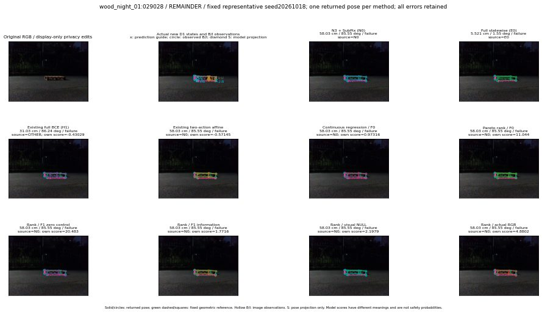

실선은 반환 자세, 초록 점선은 고정 기하 참조입니다. S는 영상 관측이 아닙니다. 점수는 모델별 의미가 다르며 보정된 안전 확률이 아닙니다. 개인정보 처리는 표시 사본에만 적용했습니다.
| 방법·seed | 위치 / 회전 / 공동성공 | 실제 출처 | 선택 후보 | 각 모델 자체 점수 |
|---|---|---|---|---|
| N0 | 58.03 cm / 85.55 deg / failure | N0 | N/A | N/A |
| E0 | 5.521 cm / 1.55 deg / failure | E0 | N/A | N/A |
| E0_REGENERATED | 5.521 cm / 1.55 deg / failure | E0 | E0_REGENERATED | N/A |
| POSEFIX_SUBPIX_PF_ANCHOR | 57.35 cm / 85.92 deg / failure | OTHER | N/A | N/A |
| POSEFIX_SUBPIX_YOLO_ANCHOR | 57.35 cm / 85.92 deg / failure | OTHER | N/A | N/A |
| D1_H1_MLP_s20261018 | 31.03 cm / 86.24 deg / failure | OTHER | G13/ORIGINAL_WD/endpoint/23 | -0.43028637766838074 |
| D1_H1_MLP_s20261019 | 31.03 cm / 86.24 deg / failure | OTHER | G13/ORIGINAL_WD/endpoint/23 | -0.6661719083786011 |
| D1_H1_MLP_s20261020 | 31.03 cm / 86.24 deg / failure | OTHER | G13/ORIGINAL_WD/endpoint/23 | -0.7884656190872192 |
| D1_H1_PAIR_MLP_s20261018 | 5.521 cm / 1.55 deg / failure | E0 | E0_REGENERATED | -1.7191537618637085 |
| D1_H1_PAIR_MLP_s20261019 | 58.03 cm / 85.55 deg / failure | N0 | N0 | -1.692671298980713 |
| D1_H1_PAIR_MLP_s20261020 | 58.03 cm / 85.55 deg / failure | N0 | N0 | -1.7561910152435303 |
| D1_H1_PAIR_ROLE_AFFINE_s20261018 | 58.03 cm / 85.55 deg / failure | N0 | N0 | -0.5714477300643921 |
| D1_H1_PAIR_ROLE_AFFINE_s20261019 | 58.03 cm / 85.55 deg / failure | N0 | N0 | -0.9259933829307556 |
| D1_H1_PAIR_ROLE_AFFINE_s20261020 | 58.03 cm / 85.55 deg / failure | N0 | N0 | -0.6745091080665588 |
| R_CONT_F0_s20261018 | 58.03 cm / 85.55 deg / failure | N0 | N0 | 0.9731609225273132 |
| R_CONT_F0_s20261019 | 58.03 cm / 85.55 deg / failure | N0 | N0 | 1.0503274202346802 |
| R_CONT_F0_s20261020 | 58.03 cm / 85.55 deg / failure | N0 | N0 | 1.043711543083191 |
| R_ORDER_F0_s20261018 | 58.03 cm / 85.55 deg / failure | N0 | N0 | 11.044378280639648 |
| R_ORDER_F0_s20261019 | 58.03 cm / 85.55 deg / failure | N0 | N0 | 7.57656717300415 |
| R_ORDER_F0_s20261020 | 58.03 cm / 85.55 deg / failure | N0 | N0 | -5.498430252075195 |
| R_ORDER_F1_ZERO_s20261018 | 58.03 cm / 85.55 deg / failure | N0 | N0 | 20.482969284057617 |
| R_ORDER_F1_ZERO_s20261019 | 58.03 cm / 85.55 deg / failure | N0 | N0 | 11.231541633605957 |
| R_ORDER_F1_ZERO_s20261020 | 58.03 cm / 85.55 deg / failure | N0 | N0 | 12.798110961914062 |
| R_ORDER_F1_s20261018 | 58.03 cm / 85.55 deg / failure | N0 | N0 | 1.7716445922851562 |
| R_ORDER_F1_s20261019 | 60.75 cm / 85.28 deg / failure | OTHER | G10/ORIGINAL_WD/sample/1 | 5.571540832519531 |
| R_ORDER_F1_s20261020 | 58.03 cm / 85.55 deg / failure | N0 | N0 | 1.0658619403839111 |
| V_ORDER_NULL_s20261018 | 58.03 cm / 85.55 deg / failure | N0 | N0 | 2.1978564262390137 |
| V_ORDER_NULL_s20261019 | 60.75 cm / 85.28 deg / failure | OTHER | G10/ORIGINAL_WD/sample/1 | 1.8744813203811646 |
| V_ORDER_NULL_s20261020 | 58.03 cm / 85.55 deg / failure | N0 | N0 | 5.266955375671387 |
| V_ORDER_RGB_s20261018 | 58.03 cm / 85.55 deg / failure | N0 | N0 | 4.880208492279053 |
| V_ORDER_RGB_s20261019 | 58.03 cm / 85.55 deg / failure | N0 | N0 | 0.9298627972602844 |
| V_ORDER_RGB_s20261020 | 58.03 cm / 85.55 deg / failure | N0 | N0 | -7.122972011566162 |